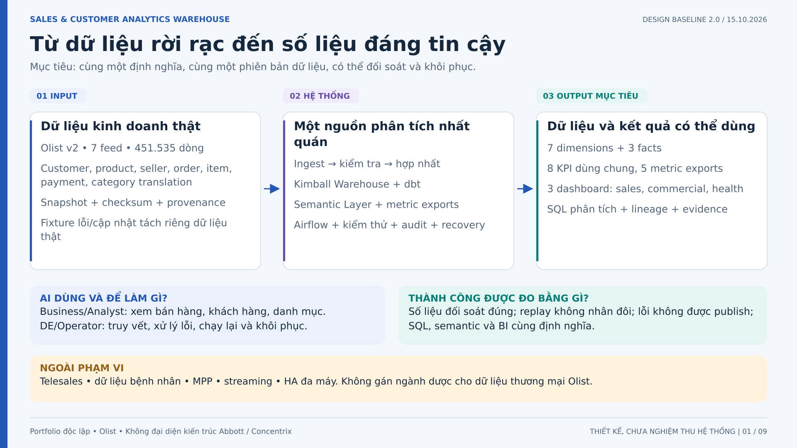
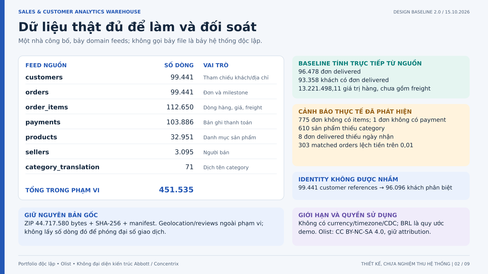
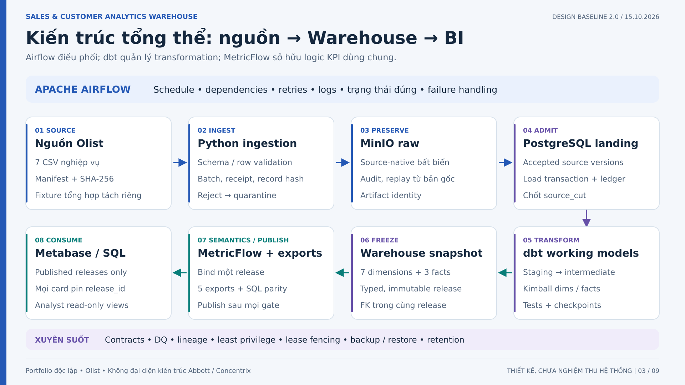
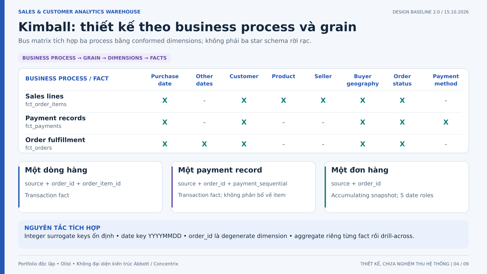
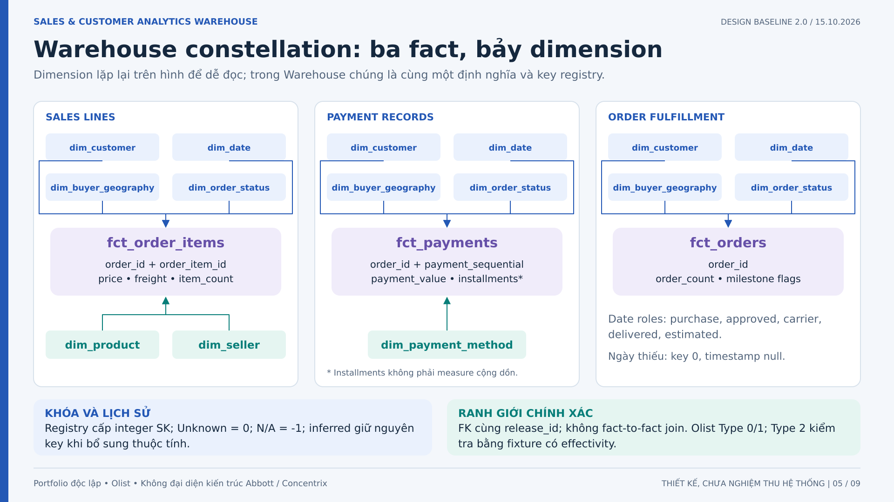
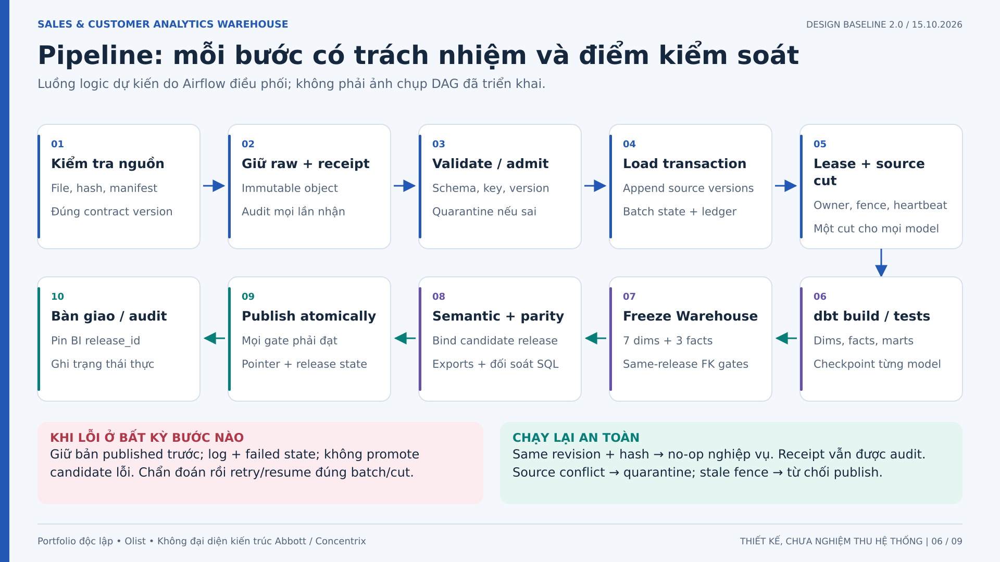
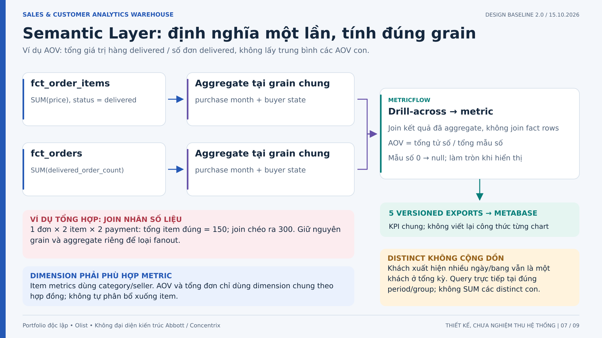
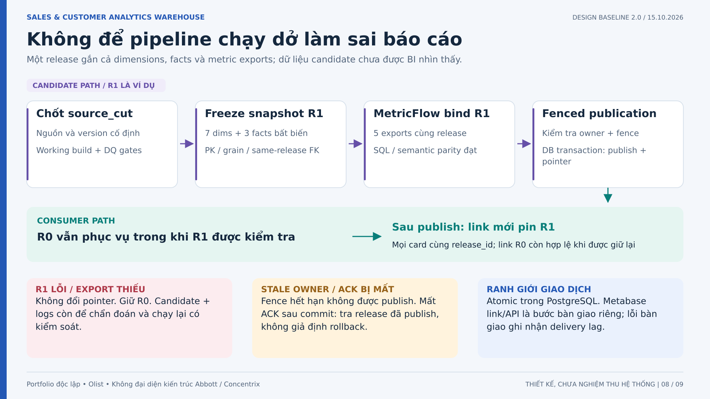
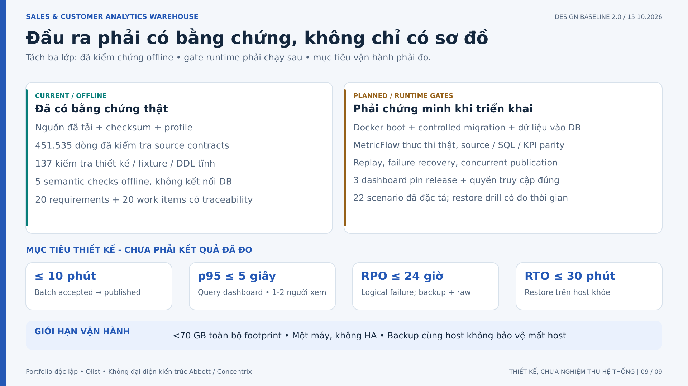

01. Từ dữ liệu rời rạc đến số liệu đáng tin cậy
Mở đầu bằng kết quả doanh nghiệp cần: số đơn, giá trị hàng, khách hàng và hiệu quả sản phẩm đáng tin cậy. Nguồn là Olist thật; đây là portfolio độc lập, không phải kiến trúc đã biết của Abbott hay Concentrix. Nêu ba lớp đầu ra: dữ liệu phân tích, KPI thống nhất và bằng chứng vận hành. Các đầu ra runtime vẫn là mục tiêu nghiệm thu.



02. Dữ liệu thật đủ để làm và đối soát
Cho thấy dự án có dữ liệu thật trước khi nói công nghệ. Phân biệt customer_id theo tham chiếu đơn với customer_unique_id bền vững. Baseline trên hình được tính trực tiếp từ nguồn, chưa phải kết quả Warehouse. Các cảnh báo dữ liệu là đặc tính cần giải thích, không tự ý xóa cho sạch. Không có CDC, timestamp cập nhật nguồn hay lịch sử business-effective; thay đổi vận hành được mô phỏng có nhãn riêng.



03. Kiến trúc tổng thể: nguồn → Warehouse → BI
Đi theo số thứ tự 1 đến 8. Hàng trên tiếp nhận và lưu phiên bản nguồn; hàng dưới đi từ phải sang trái để mô tả xử lý đến consumer. Working models không được BI đọc. MetricFlow thực thi trên một release cụ thể; Metabase đọc exports đã công bố, không giả định native connector. Atomic publication chỉ là giao dịch PostgreSQL; cập nhật link Metabase nằm ngoài giao dịch đó.



04. Kimball: thiết kế theo business process và grain
Giải thích bốn bước Kimball: chọn process, khai báo grain, chọn dimensions, chọn facts. Ngày trên payment là purchase context, không phải ngày thanh toán vì nguồn không có. Product/seller chỉ thuộc sales-line grain; không phân bổ payment về sản phẩm khi chưa có hợp đồng. Order ID là degenerate dimension, không phải lý do để join các fact nguyên tử.



05. Warehouse constellation: ba fact, bảy dimension
Đây là sơ đồ logic rút gọn, không phải toàn bộ DDL. Bốn dimension chung ở phía trên kết nối độc lập vào mỗi fact. Product và seller chỉ nối vào item fact; payment method chỉ nối payment fact. Mỗi FK vật lý gồm release_id và dimension key; không có FK fact-to-fact. SCD2 chỉ minh chứng bằng fixture có thời điểm hiệu lực rõ ràng, không gán lịch sử giả cho snapshot Olist.



06. Pipeline: mỗi bước có trách nhiệm và điểm kiểm soát
Trình bày happy path, sau đó chỉ vào đường lỗi. Lỗi schema hoặc business invariant không được retry mù hay đánh dấu thành công. Raw/object storage và load DB không phải một distributed transaction. Receipt, batch, source cut và release là các identity khác nhau. Chứng minh sau triển khai: replay không tăng business rows, model checkpoint chỉ tiến khi thành công và failed tasks không bị notification che khuất.



07. Semantic Layer: định nghĩa một lần, tính đúng grain
Hai fact không join nguyên tử. Từng fact được aggregate theo purchase period và buyer state, rồi drill-across ở cùng grain. Ví dụ nhỏ là fixture tổng hợp, không phải số liệu Olist: một đơn có hai item tổng 150 và hai payment; join chéo thành 300. Metabase nhận kết quả từ MetricFlow exports. Distinct phải query tại đúng kỳ; order-level AOV không được group product/seller theo hợp đồng hiện tại.



08. Không để pipeline chạy dở làm sai báo cáo
Dùng R0 và R1 làm nhãn release minh họa. R0 tiếp tục phục vụ trong lúc R1 được build và kiểm tra. MetricFlow phải bind R1 trên mọi connection; thiếu binding thì fail closed. Publish đổi pointer bằng giao dịch DB dưới lease fence. Browser ghim một release cho tất cả card để tránh chart A đọc R0 và chart B đọc R1. Metabase API không nằm trong giao dịch PostgreSQL; delivery lag được theo dõi riêng. Chưa có chứng cứ runtime cho các cơ chế này.



09. Đầu ra phải có bằng chứng, không chỉ có sơ đồ
Kết thúc bằng trạng thái trung thực: 137 checks là kiểm tra thiết kế, không phải 137 kiểm thử hệ thống. Năm semantic checks hiện tại không kết nối database. 22 kịch bản vận hành đã được đặc tả, chưa chạy. RPO/RTO và thời gian pipeline là mục tiêu trên một host khỏe, không phải SLA đã đo; backup cùng máy không bảo vệ mất host. Khi demo sau triển khai, chạy một happy path, một replay và một failure recovery rồi trình bày output + evidence.